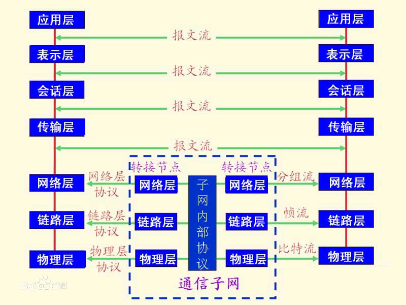
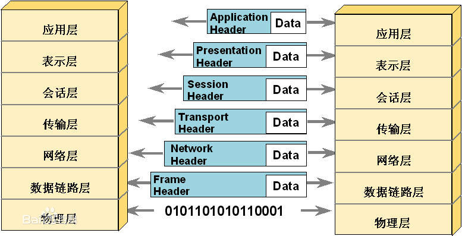
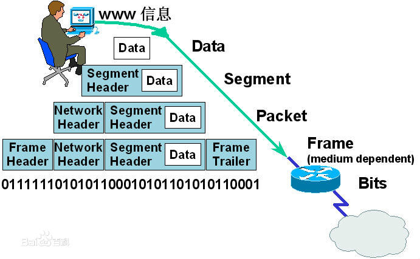
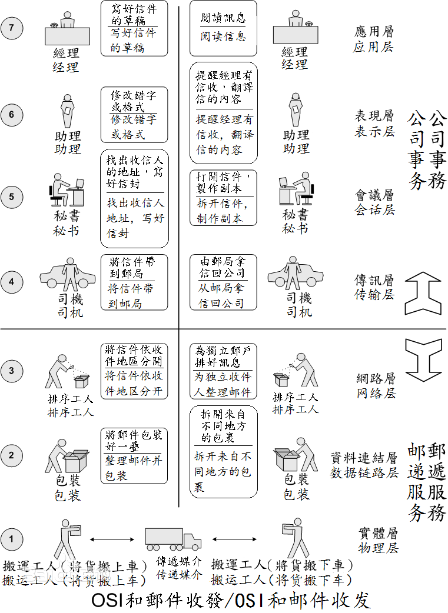

网络协议
网络协议为计算机网络中进行数据交换而建立的规则、标准或约定的集合。例如，网络中一个微机用户和一个大型主机的操作员进行通信，由于这两个数据终端所用字符集不同，因此操作员所输入的命令彼此不认识。为了能进行通信，规定每个终端都要将各自字符集中的字符先变换为标准字符集的字符后，才进入网络传送，到达目的终端之后，再变换为该终端字符集的字符。当然，对于不相容终端，除了需变换字符集字符外还需转换其他特性，如显示格式、行长、行数、屏幕滚动方式等也需作相应的变换。
要素
网络协议是由三个要素组成： (1) 语义。语义是解释控制信息每个部分的意义。它规定了需要发出何种控制信息，以及完成的动作与做出什么样的响应。 (2) 语法。语法是用户数据与控制信息的结构与格式，以及数据出现的顺序。 (3) 时序。时序是对事件发生顺序的详细说明。（也可称为“同步”）。
人们形象地把这三个要素描述为：语义表示要做什么，语法表示要怎么做，时序表示做的顺序。
工作方式
网络上的计算机之间又是如何交换信息的呢？就像我们说话用某种语言一样，在网络上的各台计算机之间也有一种语言，这就是网络协议，不同的计算机之间必须使用相同的网络协议才能进行通信。
网络协议是网络上所有设备（网络服务器、计算机及交换机、路由器、防火墙等）之间通信规则的集合，它规定了通信时信息必须采用的格式和这些格式的意义。大多数网络都采用分层的体系结构，每一层都建立在它的下层之上，向它的上一层提供一定的服务，而把如何实现这一服务的细节对上一层加以屏蔽。一台设备上的第 n层与另一台设备上的第n层进行通信的规则就是第n层协议。在网络的各层中存在着许多协议，接收方和发送方同层的协议必须一致，否则一方将无法识别另一方发出的信息。网络协议使网络上各种设备能够相互交换信息。常见的协议有：TCP/IP协议、IPX/SPX协议、NetBEUI协议等。
当然了，网络协议也有很多种，具体选择哪一种协议则要看情况而定。Internet上的计算机使用的是TCP/IP协议。
ARPANET成功的主要原因是因为它使用了TCP/IP标准网络协议，TCP/IP（Transmission Control Protocol/Internet Protocol）----传输控制协议/互联网协议是Internet采用的一种标准网络协议。它是由ARPA于1977年到1979年推出的一种网络体系结构和协议规范。随着Internet网的发展，TCP/IP也得到进一步的研究开发和推广应用，成为Internet网上的"通用语言"。
层次结构
由于网络节点之间联系的复杂性，在制定协议时，通常把复杂成分分解成一些简单成分，然后再将它们复合起来。最常用的复合技术就是层次方式，网络协议的层次结构如下： （1）结构中的每一层都规定有明确的服务及接口标准。 （2）把用户的应用程序作为最高层 （3）除了最高层外，中间的每一层都向上一层提供服务，同时又是下一层的用户。 （4）把物理通信线路作为最低层，它使用从最高层传送来的参数，是提供服务的基础。
层次划分
为了使不同计算机厂家生产的计算机能够相互通信，以便在更大的范围内建立计算机网络，国际标准化组织（ISO）在1978年提出了“开放系统互联参考模型”，即著名的OSI/RM模型（Open System Interconnection/Reference Model）。它将计算机网络体系结构的通信协议划分为七层，自下而上依次为：物理层（Physics Layer）、数据链路层（Data Link Layer）、网络层（Network Layer）、传输层（Transport Layer）、会话层（Session Layer）、表示层（Presentation Layer）、应用层（Application Layer）。
其中第四层完成数据传送服务，上面三层面向用户。对于每一层，至少制定两项标准：服务定义和协议规范。前者给出了该层所提供的服务的准确定义，后者详细描述了该协议的动作和各种有关规程，以保证服务的提供。
常用协议
TCP/IP协议毫无疑问是这三大协议中最重要的一个，作为互联网的基础协议，没有它就根本不可能上网，任何和互联网有关的操作都离不开TCP/IP协议。不过TCP/IP协议也是这三大协议中配置起来最麻烦的一个，单机上网还好，而通过局域网访问互联网的话，就要详细设置IP地址，网关，子网掩码，DNS服务器等参数。
TCP/IP尽管是目前最流行的网络协议，但TCP/IP协议在局域网中的通信效率并不高，使用它在浏览“网上邻居”中的计算机时，经常会出现不能正常浏览的现象。此时安装NetBEUI协议就会解决这个问题。
NetBEUI即NetBios Enhanced User Interface ，或NetBios增强用户接口。它是NetBIOS协议的增强版本，曾被许多操作系统采用，例如Windows for Workgroup、Win 9x系列、Windows NT等。NETBEUI协议在许多情形下很有用，是WINDOWS98之前的操作系统的缺省协议。NetBEUI协议是一种短小精悍、通信效率高的广播型协议，安装后不需要进行设置，特别适合于在“网络邻居”传送数据。所以建议除了TCP/IP协议之外，小型局域网的计算机也可以安上NetBEUI协议。另外还有一点要注意，如果一台只装了TCP/IP协议的WINDOWS98机器要想加入到WINNT域，也必须安装NetBEUI协议。
IPX/SPX协议本来就是Novell开发的专用于NetWare网络中的协议，但是也非常常用--大部分可以联机的游戏都支持IPX/SPX协议，比如星际争霸，反恐精英等等。虽然这些游戏通过TCP/IP协议也能联机，但显然还是通过IPX/SPX协议更省事，因为根本不需要任何设置。除此之外，IPX/SPX协议在非局域网络中的用途似乎并不是很大.如果确定不在局域网中联机玩游戏，那么这个协议可有可无。
划分
物理层：以太网 · 调制解调器 · 电力线通信(PLC) · SONET/SDH · G.709 · 光导纤维 · 同轴电缆 · 双绞线等
数据链路层：Wi-Fi(IEEE 802.11) · WiMAX(IEEE 802.16) ·ATM · DTM · 令牌环 · 以太网 ·FDDI · 帧中继 · GPRS · EVDO ·HSPA · HDLC · PPP · L2TP ·PPTP · ISDN·STP 等
网络层协议：IP (IPv4 · IPv6) · ICMP· ICMPv6·IGMP ·IS-IS · IPsec · ARP · RARP等
传输层协议：TCP · UDP · TLS · DCCP · SCTP · RSVP · OSPF 等
应用层协议：DHCP ·DNS · FTP · Gopher · HTTP· IMAP4 · IRC · NNTP · XMPP ·POP3 · SIP · SMTP ·SNMP · SSH ·TELNET · RPC · RTCP · RTP ·RTSP· SDP · SOAP · GTP · STUN · NTP· SSDP · BGP · RIP 等
   
参考资料
- 郭奕，赵瑜，何建编著. C#程序设计与实例分析[M]. 西安：西安电子科技大学出版社, 2016.05.第225页
- 吴功宜．计算机网络：清华大学出版社，2011
- 谢希仁．计算机网络：电子工业出版社，2008年：25